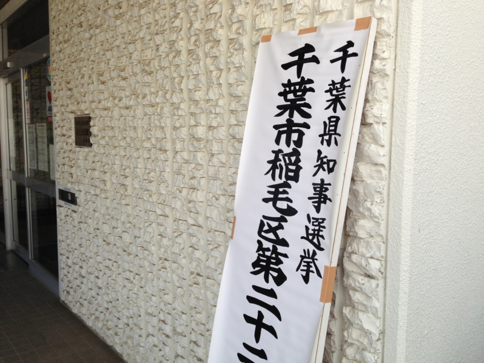

千葉県知事選挙
公開日：

千葉県知事選挙行ってきた。
期満了に伴う千葉県知事選挙は１７日に投票が行われ、無所属で現職の森田健作氏（６３）が２回目の当選を果たしました。
投票率は、３１．９６％で、前回を１３．６ポイント下回りました
投票率が低い。
最近の老若男女は「修身斉家治国平天下」という言葉も知らないのだろうか。国家を論ずる人は多いのに、身近なことを考える人は少ない。たしかに、森田知事には大きな失点がなかったし、有力な対抗馬はなかった。選挙の論点も、微妙なところ。
今回の選挙戦で森田氏は、自民党の県連と公明党とみんなの党の県議団から支援を受け、東日本大震災の被害を教訓に防災対策に力を入れたいと訴えたほか、成田空港や東京湾アクアラインなどの交通網を生かした地域経済の活性化、それに、治安対策に引き続き取り組みたいと訴えました。
けれど、選挙の日というのは、ただ投票するだけでなく、一度立ち止まって、これまでのこととこれからのことをちょっとでも考える日であるべきであるように思う。そうでないと、何か起こった時に自分に言い訳ができない。考えて・行動して・失敗した人をなにも考えていない人が非難すること以上にあさましいことなど、この世にはあまりない。投票に行かない理由を捻くり出すことは実に簡単だ。けれど、それは本当に正しい行為なのかな？ 胸を張って皆に言える？ いろいろ聞くけど、納得させられる言説には出会ったことがないのだが。
とはいえ、県という行政単位は難しい。別にこの土地で生まれたわけでもない、なんの愛着をもたない自分のような人間なら尚更。僕は大阪市生まれだけれど、大阪府って少し遠い存在だと感じていた。同じように、千葉市や東金市、館山市に愛着はあっても、千葉県に強い想いを持っている人間はあまりいないような気がする。けれど、これが日本という国になると、そうではないのが不思議だ。国という概念には妙な一体感・連帯性がある。